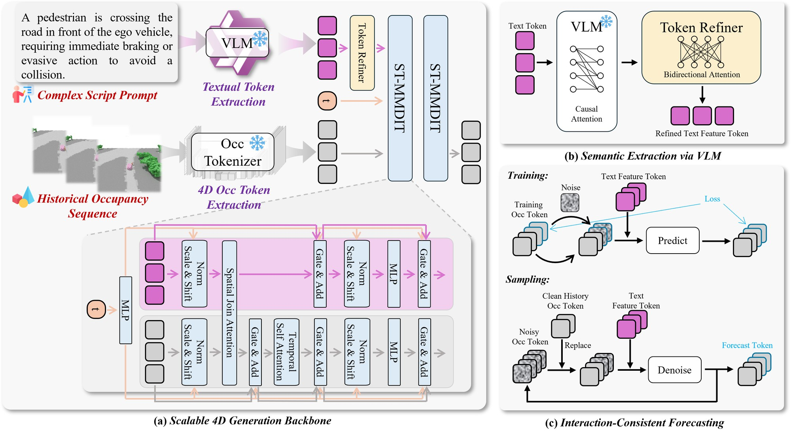
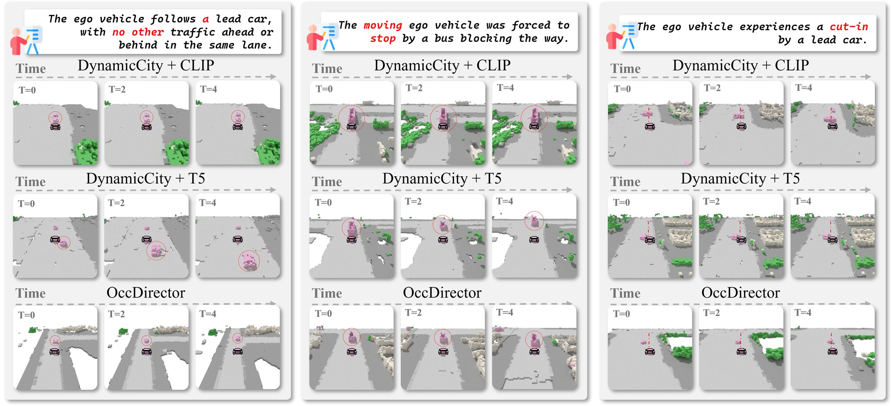
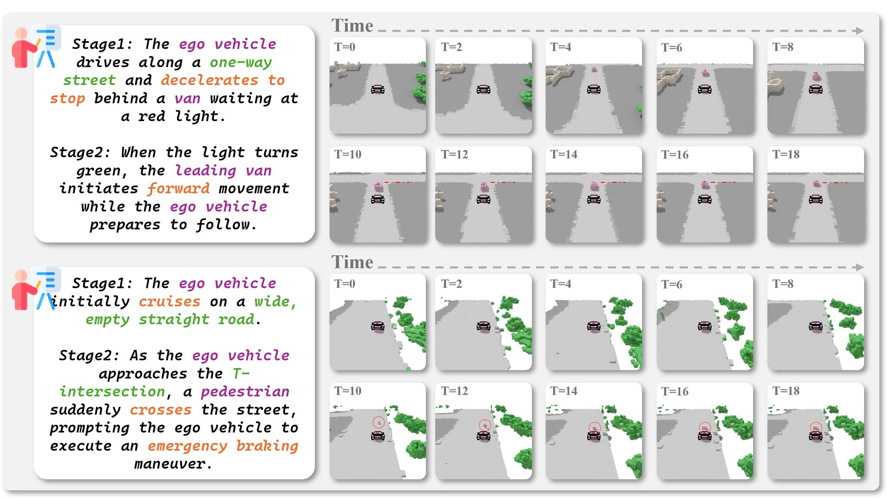
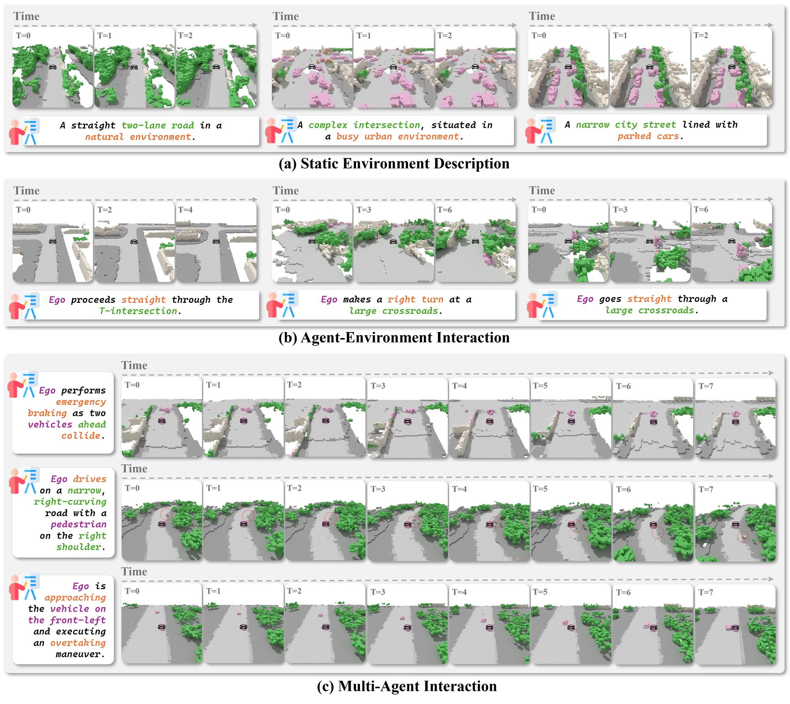
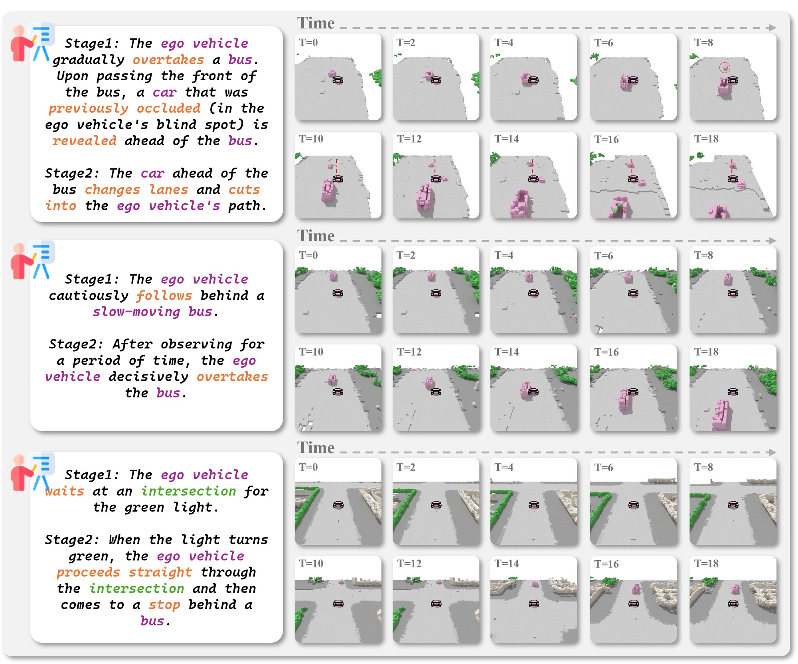
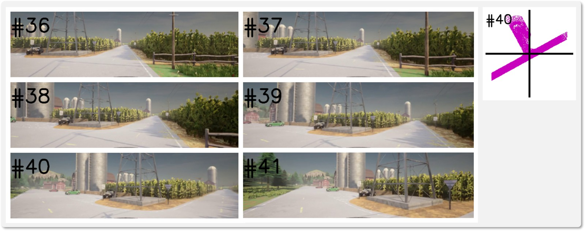
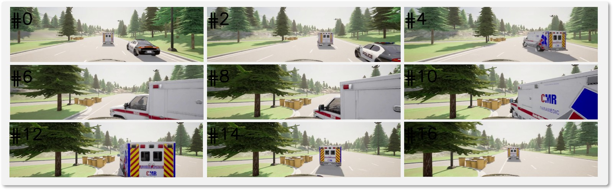
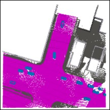
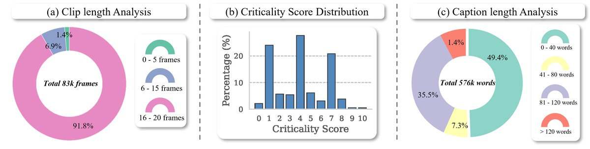

Generative world models increasingly rely on 4D occupancy for realistic autonomous driving simulation. However, existing generation frameworks depend on rigid geometric conditions (e.g., explicit trajectories) or simplistic attribute-level text, failing to orchestrate complex, sequential multi-agent interactions.
To address this semantic-spatiotemporal gap, we propose OccDirector, a pioneering framework that generates 4D occupancy dynamics conditioned solely on natural language. Operating as a “scenario director”, OccDirector maps natural language scripts into physically plausible voxel dynamics without requiring geometric priors. Technically, it employs a VLM-driven Spatio-Temporal MMDiT equipped with a history-prefix anchoring strategy to ensure long-horizon interaction consistency.
Furthermore, we introduce OccInteract-85k, a novel dataset uniquely annotated with multi-level language instructions: ranging from static layouts to intricate multi-agent behaviors, alongside a novel VLM-based evaluation benchmark. Extensive experiments demonstrate that OccDirector achieves state-of-the-art generation quality and unprecedented instruction-following capabilities, successfully shifting the paradigm from appearance synthesis to language-driven behavior orchestration.

Model architecture of OccDirector. (a) Scalable 4D Generation Backbone: a Spatio-Temporal MMDiT processes text and occupancy tokens via dual streams, utilizing separated spatial and temporal attention. (b) Semantic Extraction: a frozen VLM and a Token Refiner bridge the semantic-spatial gap. (c) Interaction-Consistent Forecasting: the history-anchoring strategy ensures the generated future strictly adheres to the context during both training and sampling.
A frozen Occ-VAE compresses the discrete 4D occupancy rollout into a compact continuous latent grid, which is patchified into occupancy tokens. Unlike prior implementations, the Occ-VAE is pretrained with variable-length rollouts, enabling flexible generation horizons. On the text side, a frozen Vision-Language Model replaces CLIP-style “bag-of-words” encoders to capture the relational and procedural semantics of interaction-heavy scripts (e.g., yielding, cut-in). A lightweight bidirectional Token Refiner then projects the VLM features into the model dimension, bridging the semantic-spatial divide.
Modeling multi-agent interactions over 4D space demands long-range dependencies, yet full attention over spatial×temporal tokens is computationally prohibitive. OccDirector adopts a double-stream Spatio-Temporal MMDiT with Spatio-Temporal Separated Attention (STSA): frame-wise 3D spatial joint attention grounds the script onto each layout, followed by patch-wise temporal self-attention that propagates dynamics smoothly over time, aligned with separated 3D+1D Rotary Positional Embeddings.
OccDirector is trained with Flow Matching. To keep long-horizon rollouts consistent with user-provided history contexts, we introduce a stochastic token-replace anchoring strategy: during training, the noisy history prefix is randomly replaced with clean ground-truth tokens, and the loss only penalizes future frames. At inference, the history prefix is overwritten with the clean condition at every ODE step. Because the model is explicitly trained to condition on clean history, this step-wise anchoring introduces no out-of-distribution artifacts.
| Method | IS ↑ | FID ↓ | KID ↓ | Precision ↑ | Recall ↑ |
|---|---|---|---|---|---|
| DOME | 3.21 | 67 | 0.06 | 0.38 | 0.23 |
| COME | 3.26 | 77 | 0.06 | 0.40 | 0.23 |
| DynamicCity | 3.39 | 61 | 0.05 | 0.31 | 0.23 |
| DynamicCity + CLIP | 3.39 | 65 | 0.05 | 0.32 | 0.24 |
| DynamicCity + T5 | 3.36 | 66 | 0.05 | 0.31 | 0.22 |
| OccDirector w/o history-prefix control | 3.39 | 64 | 0.05 | 0.34 | 0.24 |
| OccDirector w/ history-prefix control | 3.40 | 62 | 0.05 | 0.33 | 0.23 |
Per-frame image fidelity and diversity, evaluated with Inception Score (IS), Fréchet Inception Distance (FID), Kernel Inception Distance (KID), Precision and Recall. Although traditional methods rely on explicit geometric conditions, OccDirector achieves comparable per-frame quality while being conditioned purely on text.
| Method | Video realism | Instruction alignment | |||||
|---|---|---|---|---|---|---|---|
| FVD ↓ | Precision ↑ | Recall ↑ | Compl. ↑ | Struct. ↑ | Sem. Align. ↑ | Mean ↑ | |
| DOME | 437 | 0.55 | 0.03 | N/A | N/A | N/A | N/A |
| COME | 391 | 0.56 | 0.04 | N/A | N/A | N/A | N/A |
| DynamicCity | 401 | 0.57 | 0.08 | N/A | N/A | N/A | N/A |
| DynamicCity + CLIP | 388 | 0.60 | 0.008 | 3.03 | 3.54 | 2.69 | 3.09 |
| DynamicCity + T5 | 396 | 0.64 | 0.02 | 2.84 | 3.34 | 2.73 | 2.97 |
| OccDirector w/o history-prefix control | 354 | 0.48 | 0.12 | 3.59 | 3.66 | 3.04 | 3.43 |
| OccDirector w/ history-prefix control | 275 | 0.58 | 0.12 | 3.81 | 4.01 | 3.32 | 3.73 |
OccDirector achieves an FVD of 275, outperforming the strongest text-adapted baseline (DynamicCity + CLIP, FVD 388) by 29.1%. The extremely low Recall of CLIP/T5 baselines (e.g., 0.008) reveals severe mode collapse, while OccDirector covers a much wider diversity of dynamic scenarios. Instruction alignment is scored by a VLM judge on a 1–5 rubric.
| Backbone | Token Refiner | Video realism | VLM score ↑ | |||||
|---|---|---|---|---|---|---|---|---|
| FVD ↓ | Precision ↑ | Recall ↑ | Compl. ↑ | Struct. ↑ | Instr. follow ↑ | Mean ↑ | ||
| Full attention | × | 592 | 0.48 | 0.02 | 2.98 | 2.86 | 2.48 | 2.77 |
| Full attention | ✓ | 532 | 0.41 | 0.07 | 2.97 | 2.74 | 2.63 | 2.78 |
| STSA (ours) | × | 407 | 0.49 | 0.14 | 3.46 | 3.39 | 2.86 | 3.24 |
| STSA (ours) | ✓ | 354 | 0.58 | 0.12 | 3.59 | 3.66 | 3.04 | 3.43 |
Impact of the attention mechanism (Full vs. STSA) and the Token Refiner, evaluated without history control. STSA reduces FVD from 532 to 354 and lifts the VLM score from 2.78 to 3.43; removing the Token Refiner degrades FVD from 354 to 407.

Qualitative comparison of text-to-occupancy alignment. We evaluate adherence to fine-grained instructions: (Left) negation and cardinality; (Middle) dynamic attribute binding; (Right) complex “cut-in” trajectory. While CLIP/T5 baselines hallucinate extra vehicles, confuse attributes, or revert to lane-following, OccDirector follows the script precisely.

Long-horizon narrative generation. Multi-stage rollouts for a stop-and-go scenario (top) and an emergency braking event (bottom). History-prefix control maintains spatio-temporal coherence and causal logic across generation stages.
By replacing rigid trajectory inputs with a director-like natural language interface, OccDirector enables comprehensive controllability along three complementary axes: (i) Static Environment, synthesizing diverse topologies like “traffic jams” via semantic composition; (ii) Agent-Environment Interaction, executing topology-constrained maneuvers such as yielding at intersections; and (iii) Multi-Agent Interaction, generating physically plausible reactive behaviors like “emergency braking to avoid collisions”.

Hierarchical generation samples across the Static, Agent-Environment, and Multi-Agent control levels, driven purely by natural language scripts.

Additional long-horizon rollouts orchestrated by multi-stage language scripts.
To train OccDirector with language-conditioned occupancy prediction, we build OccInteract-85k via an automated data engine that translates real-world logs (UniOcc), large-scale simulation (CarlaSC protocol), and text-defined safety-critical scenarios (TTSG) into paired occupancy–language instances. All annotations are generated with structured prompting and enforced output schemas, enabling scalable production and automatic filtering.
| Dataset | # Instances | Total Duration |
|---|---|---|
| OccInteract-Static | 73.5k | N/A (Single-frame) |
| OccInteract-Env | 7.6k | 128 h |
| OccInteract-Agent | 4.6k | 12 h |
Instances denote single frames for OccInteract-Static and video clips for OccInteract-Env / OccInteract-Agent.
OccInteract-Static pairs single-frame BEV semantic occupancy snapshots with ego-centric layout captions focusing on road topology and drivable regions. OccInteract-Env provides clip-level supervision around key maneuvers at junctions, each with a discrete ego-action command and local topology description. OccInteract-Agent covers routine driving to safety-critical near-misses, with interaction-focused captions and a VLM-predicted criticality score (s ∈ [0, 10]) whose trimodal distribution enables targeted sampling of rare, high-risk scenarios.

Environment-interaction annotation: road-geometry analysis detects junctions and turn points in collected occupancy clips, and a frozen VLM generates schema-constrained captions around each key maneuver (OccInteract-Env).

Multi-agent annotation: text-defined safety-critical scenarios are rendered into occupancy rollouts and captioned with an interaction-focused description plus a VLM-predicted criticality score (OccInteract-Agent).

Unified 11-class semantic occupancy legend used for BEV rendering across all sources.

Data statistics of OccInteract-Agent. (a) Distribution of clip lengths. (b) Histogram of VLM-predicted criticality scores. (c) Distribution of caption lengths.
| Dataset | Judge VLM | Completeness ↑ | Structural ↑ | Sem. Align. ↑ | Mean ↑ |
|---|---|---|---|---|---|
| OccInteract-Static | gemini-3.0-pro |
4.16 | 4.20 | 3.84 | 4.08 |
| OccInteract-Static | gpt-5.2 |
2.97 | 3.71 | 3.03 | 3.24 |
| OccInteract-Static | qwen3-vl-235b-a22b-instruct |
3.22 | 3.84 | 3.97 | 3.68 |
| OccInteract-Env | gemini-3.0-pro |
4.62 | 4.60 | 3.55 | 4.26 |
| OccInteract-Env | gpt-5.2 |
3.21 | 3.78 | 3.01 | 3.33 |
| OccInteract-Env | qwen3-vl-235b-a22b-instruct |
3.32 | 3.81 | 3.66 | 3.60 |
| OccInteract-Agent | gemini-3.0-pro |
4.51 | 4.53 | 3.49 | 4.18 |
| OccInteract-Agent | gpt-5.2 |
3.21 | 3.72 | 2.58 | 3.17 |
| OccInteract-Agent | qwen3-vl-235b-a22b-instruct |
3.30 | 3.64 | 3.32 | 3.42 |
Mean rubric scores (1–5) from three independent VLM judges, assessing the quality of the generated dataset. Despite the increasing complexity from static layouts to multi-agent interactions, score variance under the same judge remains minimal, validating the reliability of the automated pipeline.
@inproceedings{liang2026occdirector,
author = {Liang, Zhuding and Yan, Tianyi and Chen, Dubing and Zheng, Jiasen
and Zheng, Huan and Xu, Cheng-zhong and Wang, Yida and Zhan, Kun
and Shen, Jianbing},
title = {OccDirector: Language-Guided Behavior and Interaction Generation
in 4D Occupancy Space},
booktitle = {European Conference on Computer Vision (ECCV)},
year = {2026},
}